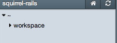
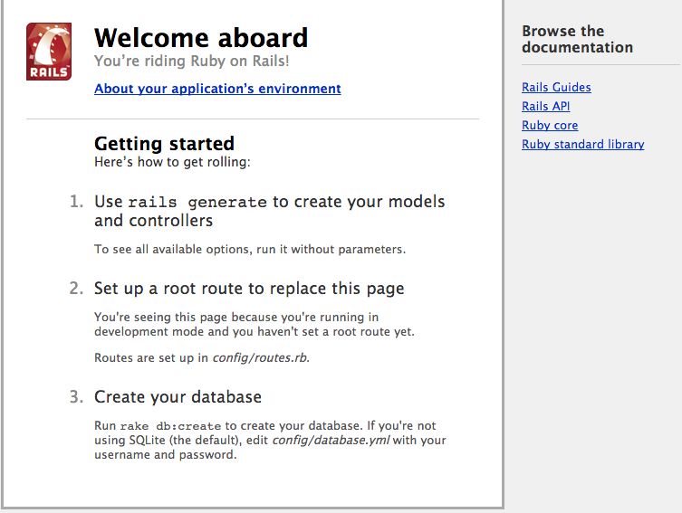

Antti
Devaaja, hakkeri, muusikko
Työkuva: Vanhempi arkkitehti, DevOps
Koulutus: Fil. Yo., tietojenkäsittelytiede, Helsingin yliopisto
Koodannut 12-vuotiaasta lähtien ja saanut siitä rahaa viimeisimmät kahdeksan vuotta. Erityisesti kiinnostunut järjestelmien automatisoinnista ja toistuvan manuaalisen työn minimoinnista. Keskittynyt versionhallintajärjestelmiin ja ohjelmistotuotantoympäristöjen integrointiin monikansallisissa organisaatioissa.
 Linkedin »
Linkedin »Heidi
Devaaja, konsultti, vapaaottelija
Työkuva: Konsultti, DevOps
Koulutus: AMK-insinööri, ohjelmistotekniikka, Metropolia
Vaihtoi lukion jälkeen kuvataiteilun koodaamiseen ja on pyörinyt IT-alan hommissa vuodesta 2005. Ydinosaamista ovat ketterät menetelmät, avoimen lähdekoodin järjestelmät ja laadunhallinta. On kuin kotonaan isojen asiakkaiden monimutkaisten ympäristöjen syövereissä.
Kehitysympäristö tai IDE.
Wikipedian mukaan “Ohjelmointiympäristö on ohjelma tai joukko ohjelmia, jolla ohjelmoija suunnittelee ja toteuttaa ohjelmistoa. Yksinkertaisimmillaan ohjelmointiympäristö on tekstieditori ja ohjelmointikielen kääntäjä.” Ohjelmoija kirjoittaa tekstieditorilla koodia, jonka kääntäjä muuttaa tietokoneen ymmärtämään konekieliseen muotoon. IDE (integrated development environment) on käytännössä yhteen pakettiin integroitu tekstieditori ja kääntäjä.
Perinteisempiä, työpöydältä käytettäviä IDE:jä ovat mm.
Tätä harjoitussessiota varten käytetään puhtaasti selaimessa ajettavaa IDE:ä. Nitrous.io tarjoaa virtuaalikoneen, johon on valmiiksi asennettu tarvittavat komponentit, helppokäyttöisen editorin sekä komentorivitulkin (CLI). Oman tilin palveluun voit luoda täältä.
{kind=link}
Ruby on Rails ja Squirrel.
Ruby on Rails on Ruby-ohjelmointikilellä toteutettu sovelluskehys (framework), jonka avulla web-ohjelmistojen toteuttaminen on todella tehokasta ja nopeaa. Tunnetuimpia Railsillä toteutettuja sivustoja ovat Twitter ja Github, sekä suomalaisena esimerkkinä vaikkapa Maanmittauslaitoksen kiinteistökaupan verkkopalvelu. Maaliskuussa 2013 arvioitiin, että yli 200000 sivustoa on toteutettu käyttäen Railsiä.
Tämän työpajan ideana on näyttää, miten helposti Railsillä pääsee alkuun ja pystyy toteuttamaan nopeasti nk. proof-of-concept-tason web-ohjelmistoja. Tarkoitus on luoda etäisesti Twitteriä muistuttava palvelu - Squirrel (keksikää ite parempi nimi). Palvelussa käyttäjä voi viestiä ajatuksiaan kaikelle kansalle (eli, öö, squeekata. sigh) käyttäen nimimerkkiä.
Virtuaalikoneen ja ohjelmointiympäristön luominen
Kun olet rekistöröitynyt Nitrous.io -palveluun, luodaan ympäristö seuraavasti:
- Yläreunan valikosta valitaan "Boxes"
- Painetaan nappia "New Box"
- Valitaan "Ruby/Rails"
- Name-kenttään voi laittaa oikeastaan mitä tahansa, itse laitoin "squirrel-rails"
- Muutoin vakioasetukset ovat ihan riittävät (Europe, 384 MB, 750 MB)
- Paina "Create Box"-nappia
Tässä kohtaa palvelu miettii hetken aikaa, kun se luo uutta ympäristöä. Noin minuutin kuluessa palvelu ohjaa sinut uuteen ympäristöösi.
Uuden Rails-projektin luonti
Sivun alareunassa on komentorivitulkki, jossa lukee jotakuinkin seuraavaa:
action@squirrel-rails-59591:~$

Sivun vasemmassa reunassa oleva laatikko kuvaa hakemistorakennetta. Kotihakemiston ~ alla on kansio workspace. Projekti luodaan tänne, eli siirrytään ensin komentotulkissa oikeaan paikkaan cd workspace -komennolla.
action@squirrel-rails-59591:~$ cd workspace
action@squirrel-rails-59591:~/workspace$
Uusi rails-projekti luodaan komennolla rails new <projektin-nimi> joten tässä kohtaa luodaan projekti ja siirrytään projektikansioon cd <projektin-nimi>. Projektin luonti kestää jonkin aikaa, sillä rails hakee netistä kaikki tarvittavat palikat.
action@squirrel-rails-59591:~/workspace$ rails new squirrel
[...]
>= 1.9.2 : nothing to do! Yay!
action@squirrel-rails-59591:~/workspace$ ls
squirrel
action@squirrel-rails-59591:~/workspace$ cd squirrel
action@squirrel-rails-59591:~/workspace/squirrel$
Vaikka projekti ei vielä sisällä mitään, voidaan sen toiminta kuitenkin jo testata. Testipalvelin käynnistetään komennolla rails server.
action@squirrel-rails-59591:~/workspace/squirrel$ rails server
=> Booting WEBrick
=> Rails 4.0.0 application starting in development on http://0.0.0.0:3000
=> Run `rails server -h` for more startup options
=> Ctrl-C to shutdown server
[2013-12-10 19:29:06] INFO WEBrick 1.3.1
[2013-12-10 19:29:06] INFO ruby 2.0.0 (2013-06-27) [x86_64-linux]
[2013-12-10 19:29:06] INFO WEBrick::HTTPServer#start: pid=655 port=3000
Palvelimen käynnistettyä sitä voi testata valitsemalla sivuston ylävalikosta Preview ja sen alta Port 3000. Tuloksena pitäisi avautua jotakuinkin seuraavan näköinen sivu:
Palvelimen voi pysäyttää painamalla komentotulkissa näppäinyhdistelmää Ctrl-C.
Sovelluksen runko
Eräs Railsin hienouksista on se, että ohjelman sisäisestä toiminnasta ei tarvitse tietää juuri mitään, että saa jotain toimivaa aikaiseksi. Rails tuo mukanaan mahdollisuuden käyttää generaattoreita. Jokaiselle Rails-ohjelmiston komponentille on oma generaattorinsa, mutta tarjolla on myös mahdollisuus luoda niinkutsuttu rakennusteline scaffold, joka luo tarvittavan rungon ohjelmakoodille. Tämä tapahtuu käskyllä rails generate scaffold <ResurssinNimi> <kentän_nimi>:<kentän_tietotyyppi> ....
Meidän tapauksessamme siis haluamme luoda viestejä (Squeek), jotka sisältävät viestin lähettäjän nimimerkin sekä itse viestin:
action@squirrel-rails-59591:~/workspace/squirrel$ rails generate scaffold Squeek user:string message:text
invoke active_record
create db/migrate/20131210212012_create_squeeks.rb
create app/models/squeek.rb
invoke test_unit
create test/models/squeek_test.rb
create test/fixtures/squeeks.yml
invoke resource_route
route resources :squeeks
invoke scaffold_controller
create app/controllers/squeeks_controller.rb
invoke erb
create app/views/squeeks
create app/views/squeeks/index.html.erb
create app/views/squeeks/edit.html.erb
create app/views/squeeks/show.html.erb
create app/views/squeeks/new.html.erb
create app/views/squeeks/_form.html.erb
invoke test_unit
create test/controllers/squeeks_controller_test.rb
invoke helper
create app/helpers/squeeks_helper.rb
invoke test_unit
create test/helpers/squeeks_helper_test.rb
invoke jbuilder
create app/views/squeeks/index.json.jbuilder
create app/views/squeeks/show.json.jbuilder
invoke assets
invoke coffee
create app/assets/javascripts/squeeks.js.coffee
invoke scss
create app/assets/stylesheets/squeeks.css.scss
invoke scss
create app/assets/stylesheets/scaffolds.css.scss
action@squirrel-rails-59591:~/workspace/squirrel$
Ohjelmiston data tallennetaan tietokantaan myöhempää käyttöä varten ja muille käyttäjille näytettäväksi. Seuraavaksi luodaan tietokannalle sopiva rakenne edellisessä vaiheessa luotujen viestien tallettamiseen. Tämä tehdään komennolla rake db:migrate.
action@squirrel-rails-59591:~/workspace/squirrel$ rake db:migrate
== CreateSqueeks: migrating ==================================================
-- create_table(:squeeks)
-> 0.0017s
== CreateSqueeks: migrated (0.0068s) =========================================
action@squirrel-rails-59591:~/workspace/squirrel$
Jotta ohjelma osaisi näyttää oikean sivun, pitää sille kertoa mitä halutaan näyttää. Vasemman reunan valikosta etsitään tiedosto routes.rb
Lisätään tiedostoon rivi root 'squeeks#index' seuraavasti:
Squirrel::Application.routes.draw do
resources :squeeks
root 'squeeks#index'
# paljon kommentoituja rivejä
# ...
end
Tässä kohtaa ohjelman perustoiminnallisuus onkin valmis, eli ei muuta kuin testaamaan rails server.
action@squirrel-rails-59591:~/workspace/squirrel$ rails server
=> Booting WEBrick
=> Rails 4.0.0 application starting in development on http://0.0.0.0:3000
=> Run `rails server -h` for more startup options
=> Ctrl-C to shutdown server
[2013-12-10 22:46:34] INFO WEBrick 1.3.1
[2013-12-10 22:46:34] INFO ruby 2.0.0 (2013-06-27) [x86_64-linux]
[2013-12-10 22:46:34] INFO WEBrick::HTTPServer#start: pid=655 port=3000
Ja tämän jälkeen taas sivuston ylävalikosta Preview ja Port 3000